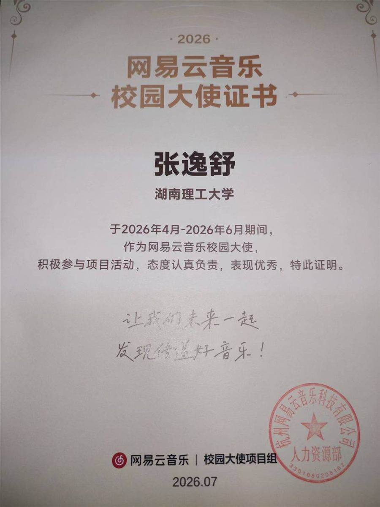
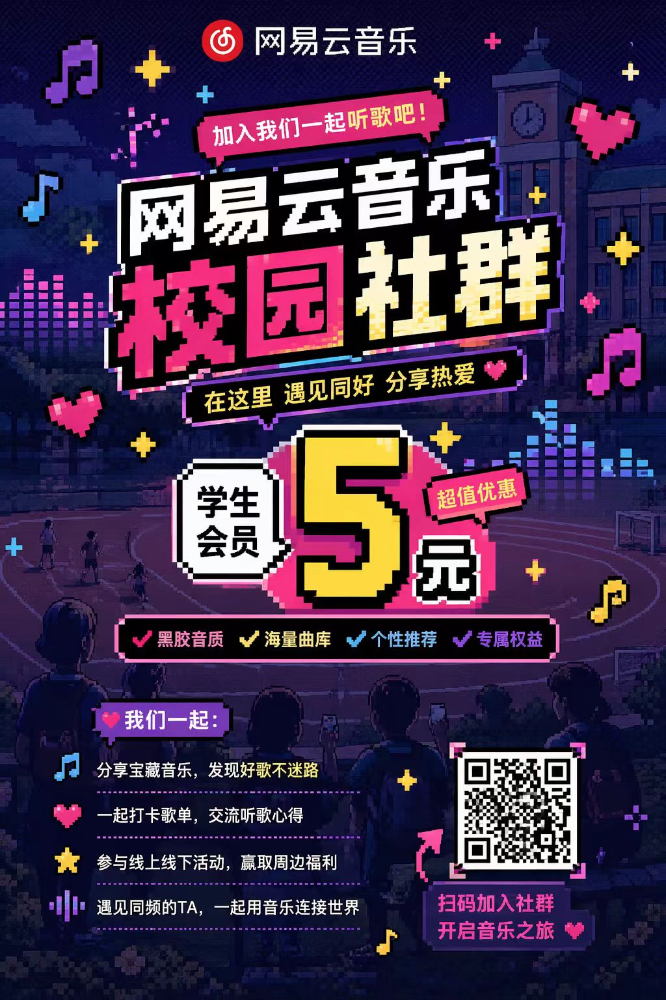
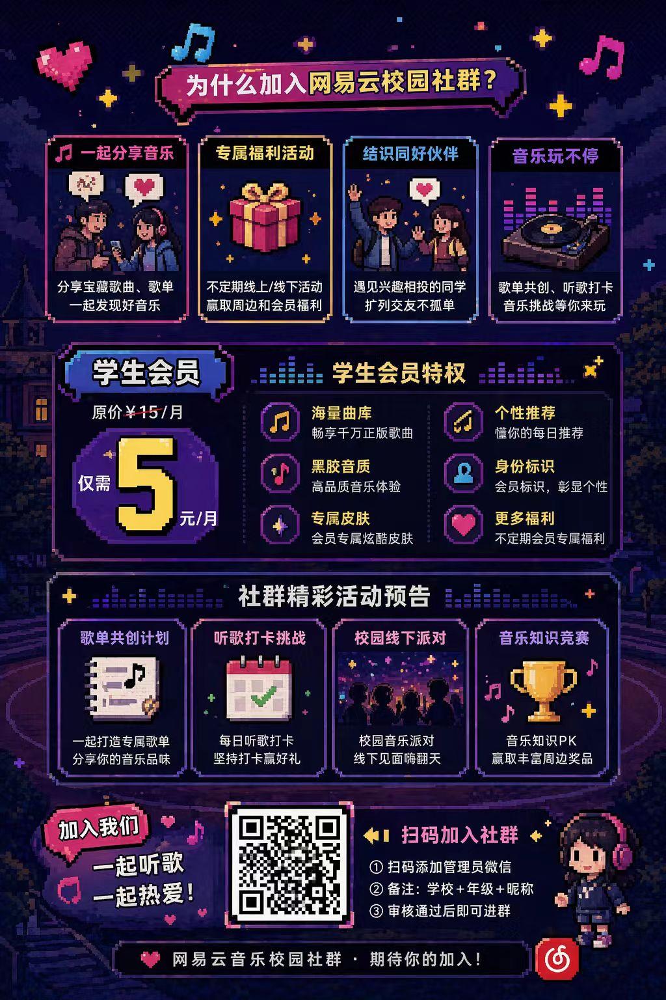
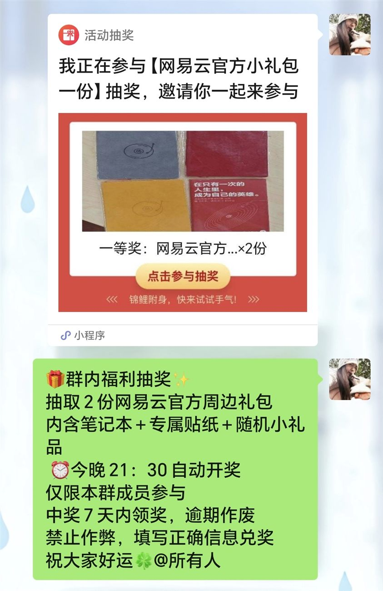

NO.02 / 2026.04 - 2026.07
校园回声站
网易云音乐校园社群运营实验
Campus Community Operation

Community Log
01 / 项目背景
为什么开始这次校园运营实践？
作为网易云音乐校园大使，希望通过校园社群连接高校用户，提高品牌活动触达和用户参与。
我从0开始建立校园用户社群，通过线上推广、活动运营和用户维护，探索校园场景下的社群增长方式。
第一部分 / 身份证明
校园大使证书
02 / 社群运营与活动推广
Community & Campaign
从招募用户到维持日常交流，我围绕校园场景推进社群运营，并把网易云音乐的活动信息整理成更容易被同学注意和理解的内容。
- 制作社群招募海报，通过校园渠道发布招募信息，推动社群从0建立。
- 持续发布活动与品牌权益信息，维护群内交流，收集用户反馈。
- 制作活动推广海报，并用抽奖互动带动社群参与。
03 / 宣传物料展示
校园传播物料记录



04 / 项目成果与复盘
Results & Learnings
从0搭建校园社群，吸引100+用户加入；招募海报、活动海报和抽奖截图记录了从用户招募到社群互动的具体执行。
这次实践让我意识到，把用户拉进群只是第一步。活动信息需要说清楚与同学有什么关系，发布之后也要持续维护交流；后续还需要更系统地记录参与情况，才能判断哪些内容真正有效。